ME 170: Bed Desk with Privacy Hood
A semester ME 170 design project at the University of Illinois: a bed desk with a foldable privacy hood so a student can work at night without shining light on a sleeping roommate. The team ran the full cycle from user interviews to a production-ready package of CAD, engineering drawings, tolerance analysis, and a costed bill of materials.
This page is the engineering side: CAD, GD&T part drawings, tolerance and fit analysis, and cost-driven manufacturing decisions.
My role: On a three-person team (AB6-3), I designed the recessed LED light assembly (the diffuser, casing, and clip lid) and produced its CAD, GD&T part drawings, tolerance and fit analysis, and cost-driven manufacturing choices.

Engineering the desk · ME 170
Team AB6-3The brief: interviews pointed to a common dorm problem, a roommate working late keeping the other awake, with light the biggest disturbance. The product spec set hard targets: MSRP ≤ $60/unit, at least a 70% cut in external light, setup under 10 seconds, a footprint inside a Twin XL bed (≤ 39" × 16"), and about 10 lb or less.
The product
The desk sits over the bed on folding steel legs. Its defining feature is a fan-folding privacy hood that blocks light from the work area. Two LED lights recess into the surface to light the work without spilling outward, a hole grid acts as passive laptop air vents, and the surface carries cup holders. Hood and legs fold flat, collapsing to a packed 39" × 6" × 16".
CAD model
Modeled as a full CAD assembly that drove every downstream deliverable: the exploded views, drawings, tolerance stack, and cost estimate. The hood is stacked folding panels that collapse toward the desk; the legs bend from a single steel tube.

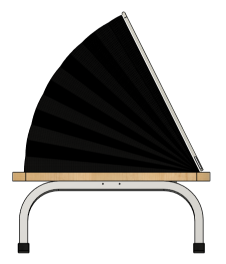
Exploded assembly and bill of materials
The full assembly breaks into seven called-out items: the wooden desk base, two leg assemblies, two LED assemblies, two hood pegs, and the hood frame. Each sub-assembly was drawn on its own, and every part fed a costed bill of materials. Costing the BOM in aPriori returned a fully burdened part cost of $15.45/unit on about $89,300 in tooling investment, landing a computed selling price of $46.35, comfortably under the $60 target.
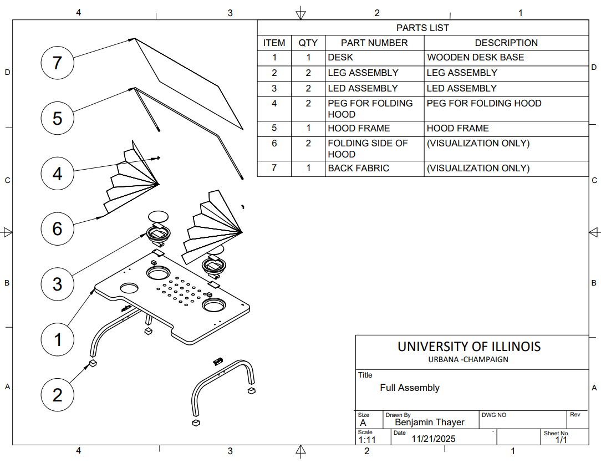
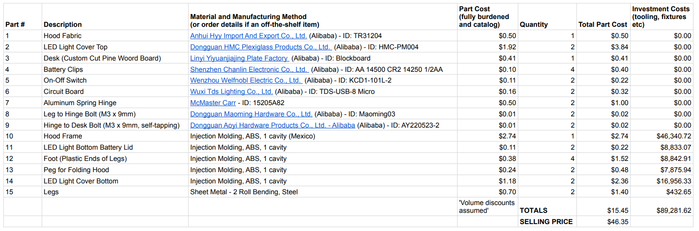
Engineering drawings and GD&T
Every custom part was documented to ASME Y14.5M-2018 in third-angle projection with a standard title and tolerance block. The drawings carry material callouts, section and detail views, and hole and fit callouts, matched to how each part would be made: powder-coated steel legs, ABS injection-molded plastics, rubber feet, and a plexiglass diffuser.
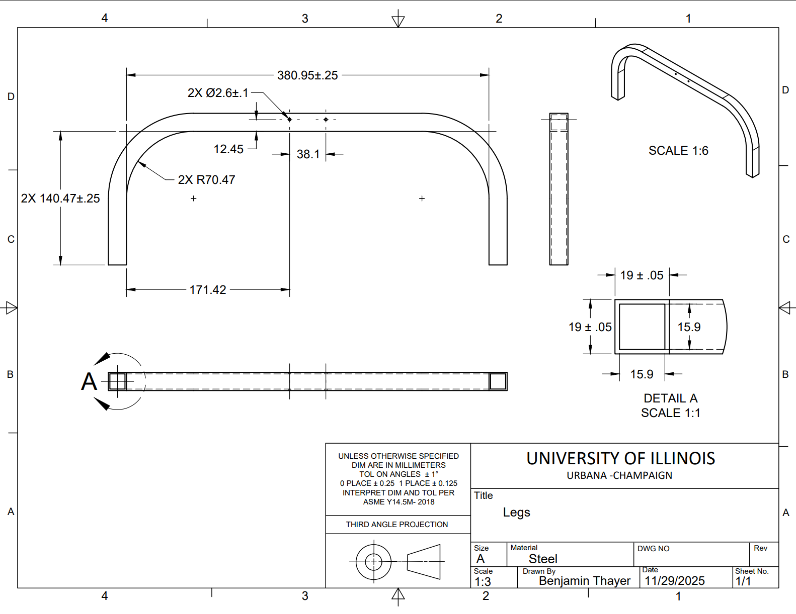
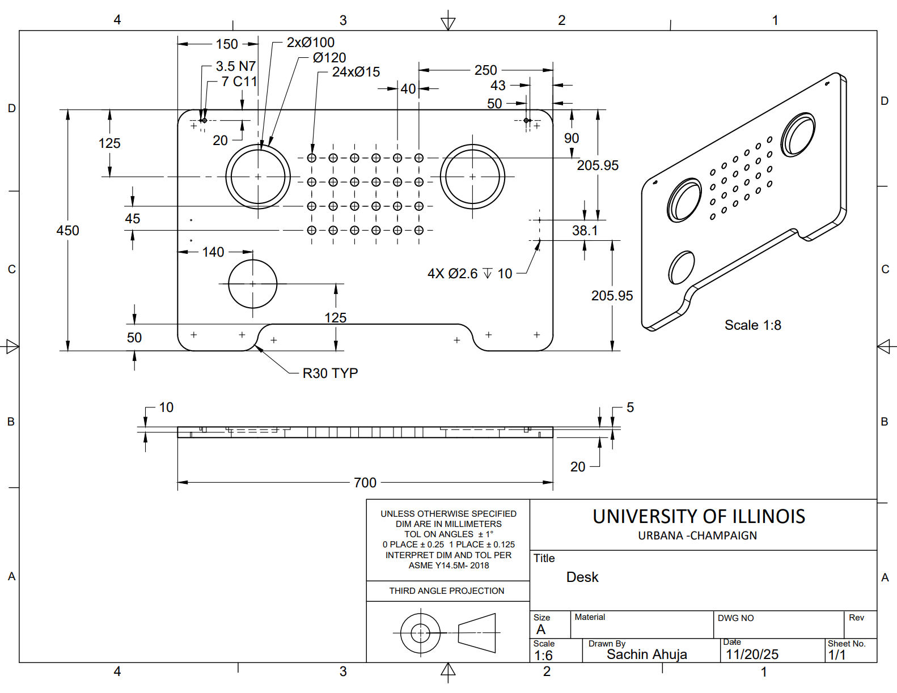
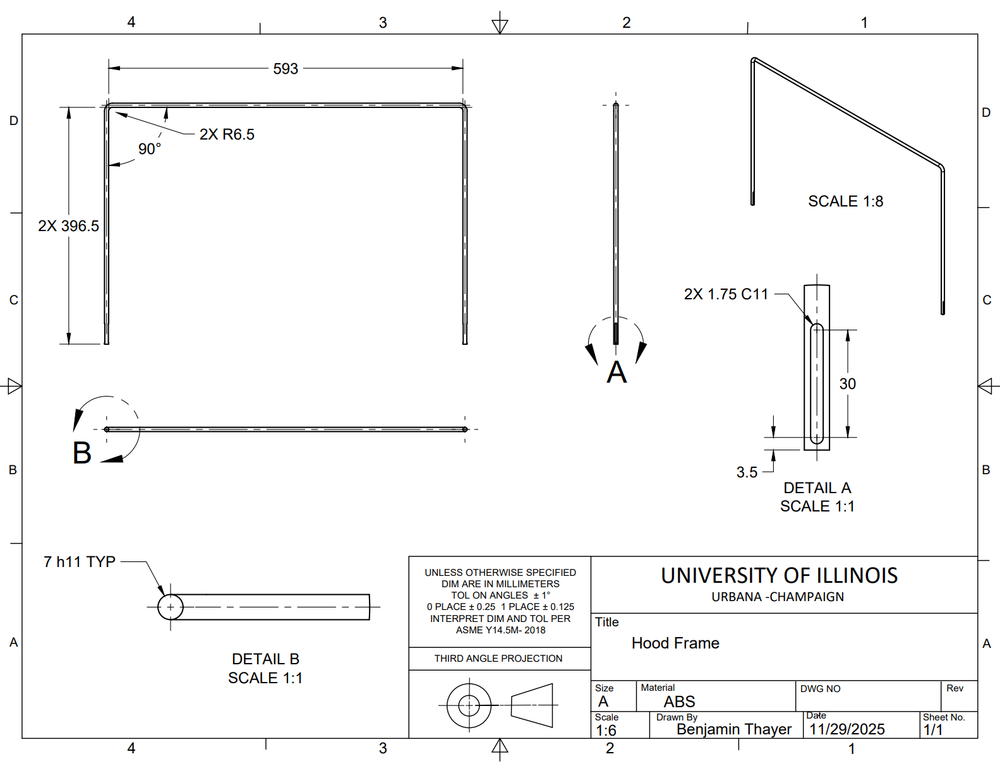
The LED light assembly (my drawings)
The recessed LED lights were the parts I detailed: a plexiglass diffuser (LED top), an ABS casing (LED bottom) housing two AAA batteries with a circuit board and switch, and a clip lid closing the battery compartment. I drew each with section views to show wall thicknesses and the snap and clip features.
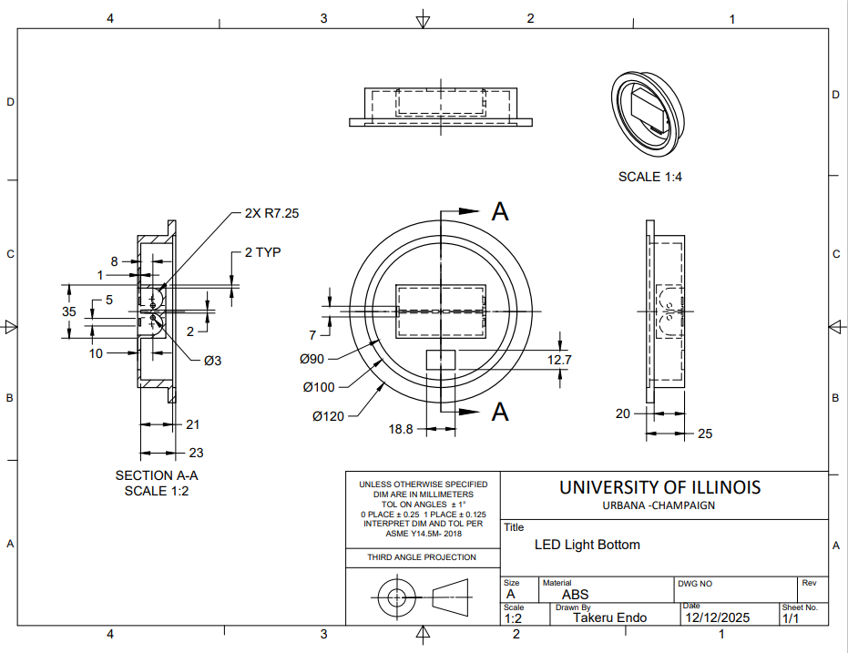
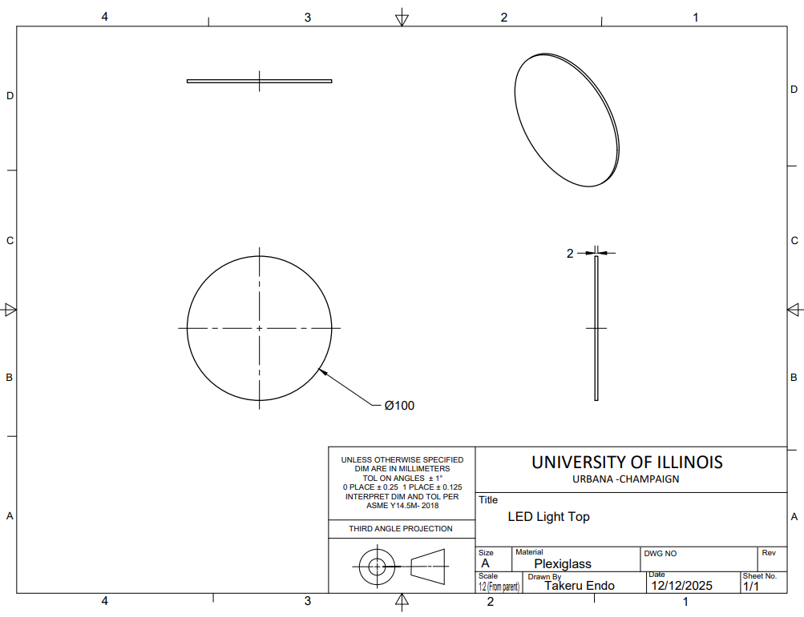
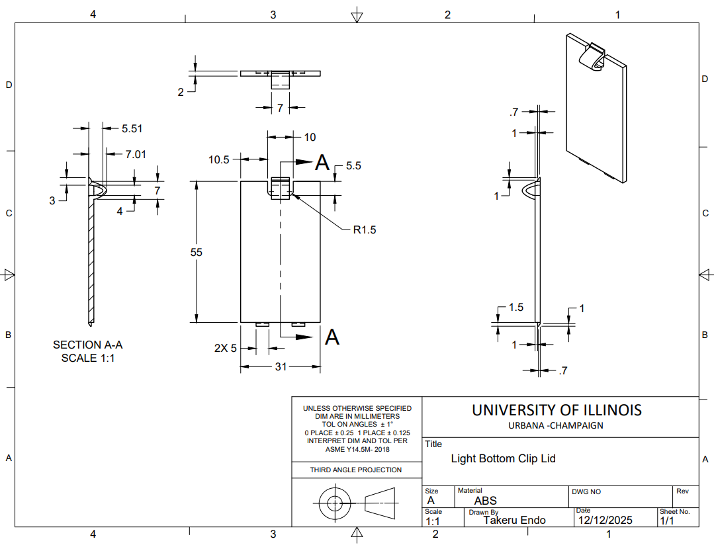
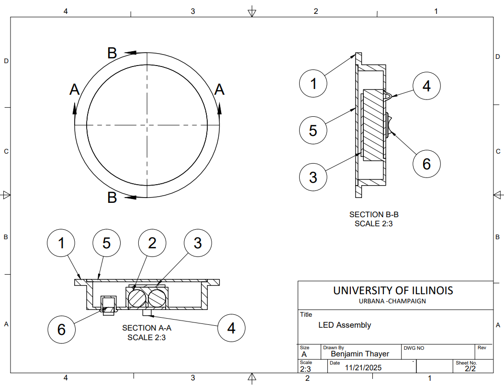
Tolerance analysis
Two fits were analyzed in detail, each chosen to match the part's job and how it is made.
- Hood peg into hood-frame slot (rotating/sliding fit). The user swings and sets the hood by hand, so it needs a loose clearance fit. A Ø3.5 h11 peg in a Ø3.5 C11 slot gives a 0.07 mm allowance and up to 0.22 mm clearance. Both features sit at IT grade 11 on purpose, loose enough to injection-mold like the other plastics, which keeps cost down.
- LED assembly into the desk (rigid axial fit). The goal is a flush LED top. The fit uses a 0 mm allowance with the window shifted negative (about −0.15 mm) so that, if not perfectly flush, the light sits slightly below the surface rather than proud into the workspace. The wider tolerance went to the wooden desk, since the molded LED flange holds tighter than processed wood.
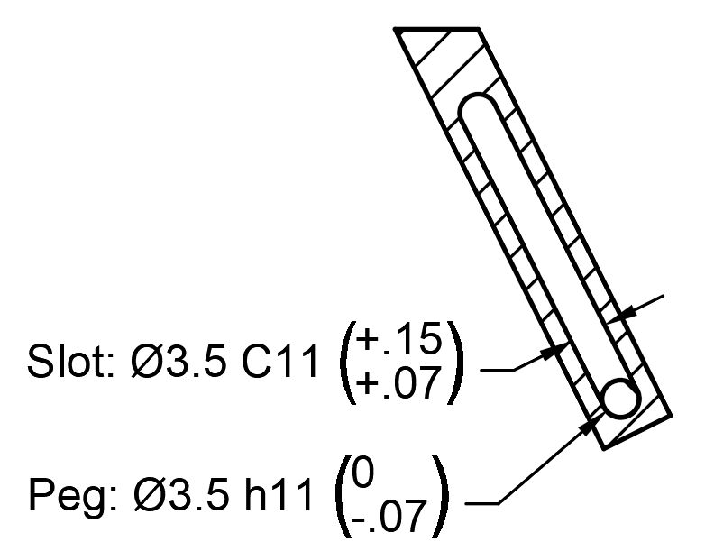
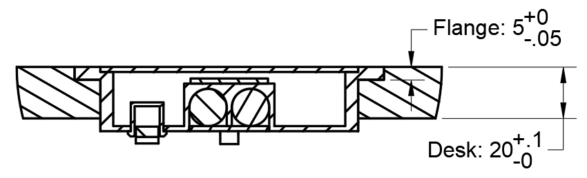
Cost reduction and manufacturability
The hood frame is one of the largest, most expensive custom parts, so cutting its cost mattered most. In aPriori, the biggest price lever turned out to be country of manufacture: fully burdened part cost ran from $2.49 (India) to $4.07 (Germany). We chose Mexico at $2.74, near the low end while close to the USA, where most orders ship. Process choices followed the same DFM logic: injection molding for plastics, pipe bending for the steel legs, cut cloth for the hood curtain.
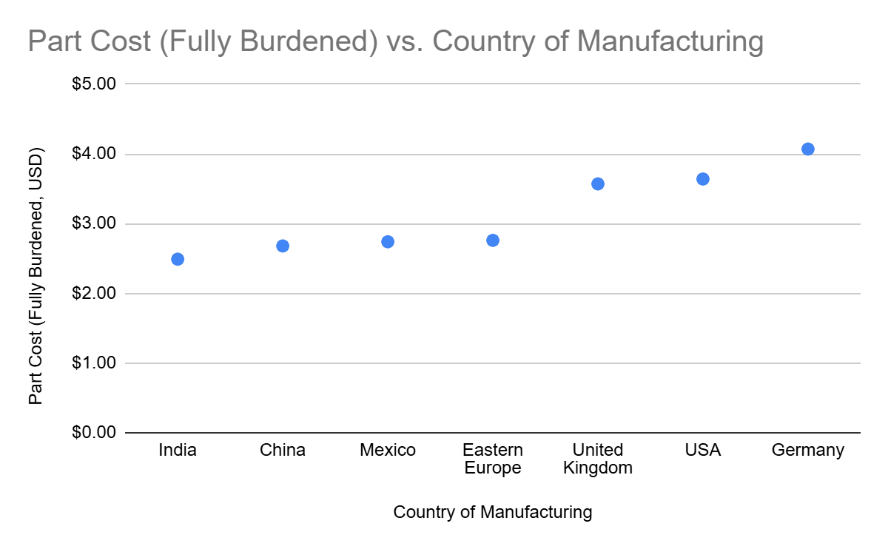
Results
- $46.35 selling price on a $15.45 part cost, under the $60 target and competitive with basic bed desks, while adding the hood, built-in lights, air vents, and cup holders.
- Choosing Mexico over Germany cut the studied part cost from $4.07 to $2.74, about a 33% reduction.
- Two documented fits: a clearance fit (allowance 0.07 mm, clearance 0.22 mm) for the hood pivot, and a negatively biased rigid fit (about −0.15 mm) for a flush LED.
- A complete ASME Y14.5M-2018 drawing package for every custom part, sized for about 95,000 units/year.